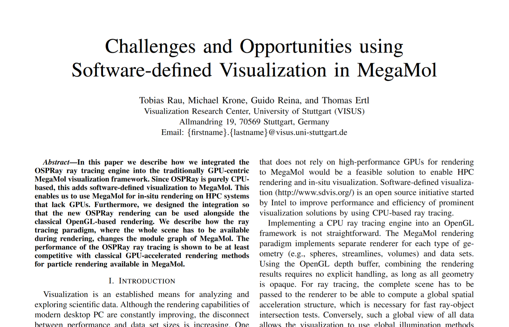

Challenges and Opportunities using Software-defined Visualization in MegaMol

Venue. IXPUG (2017)
Authors. Tobias Rau, Michael Krone, Guido Reina, Thomas Ertl
Materials.
PDF
supplemental
Abstract. In this paper we describe how we integrated the OSPRay ray tracing engine into the traditionally GPU-centric MegaMol visualization framework. Since OSPRay is purely CPU-based, this adds software-defined visualization to MegaMol. This enables us to use MegaMol for in-situ rendering on HPC systems that lack GPUs. Furthermore, we designed the integration so that the new OSPRay rendering can be used alongside the classical OpenGL-based rendering. We describe how the ray tracing paradigm, where the whole scene has to be available during rendering, changes the module graph of MegaMol. The performance of the OSPRay ray tracing is shown to be at least competitive with classical GPU-accelerated rendering methods for particle rendering available in MegaMol.